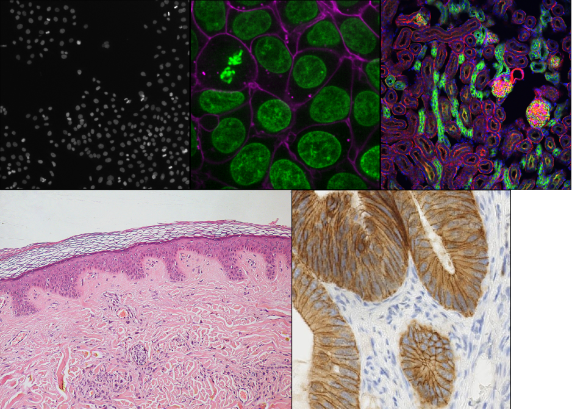

Imaging Software for microscopy
Last updated on 2026-09-03 | Edit this page
Overview
Questions
- What are the different software options for viewing microscopy images?
Objectives
- Explain the pros and cons of different image visualisation tools (e.g. ImageJ, Napari and proprietary options)
Choosing the right tool for the job
Light microscopes can produce a very wide range of image data, for example:
- 2D or 3D
- Time series or snapshots
- Different channels
- Small to large datasets

With such a wide range of data, there comes a huge variety of software that can work with these images. Different software may be specialised to specific types of image data, or to specific research fields. There is no one ‘right’ software to use - it’s about choosing the right tool for yourself, your data, and your research question!
Some points to consider when choosing software are:
What is common in your research field?
Having a good community around the software you work with can be extremely helpful - so it’s worth considering what is popular in your department, or in relevant papers in your field.Open source or proprietary?
It’s important to consider if the software you are using is open-source or proprietary (requiring a one-off payment or a regular subscription fee to use). Open source means it is more freely available and likely more accessible to a larger group of researchers, but it may not be as robust or stable as software commercially developed by large team, particularly if you are interested in a very specific feature that it provides. Open source software often will rely on more open file formats and workflows, and they are designed to be extended by the community.Support for image types?
For example, does it support 3D images, or timeseries?Can it be automated/customised/extended?
Can you automate certain steps with your own scripts or plugins? Scripts are lists of commands to be carried out by a piece of software e.g. load an image, then threshold it, then measure its size…These are often used to automate processes, especially for high throughput studies. Plugins add optional new features to a piece of software (rather than automating use of existing features). They’re designed to be reusable so other members of the community can easily benefit from these new features. Both of these components are useful to make sure your analysis steps can be easily shared and reproduced by other researchers.
As always, the right software to use will depend on your preference, your data and your research question. This being said, we will only use open-source software in this course, and we encourage using open-source software where possible.
Fiji/ImageJ and Napari
While there are many pieces of software to choose from, two of the most popular open-source options are Fiji/ImageJ and Napari. They are both:
- Freely available
- ‘General’ imaging software i.e. applicable to many different research fields
- Supporting a wide range of image types
- Customisable with scripts + plugins
Both are great options for working with a wide variety of images - so why choose one over the other? Some of the main differences are listed below if you are interested:
Python vs Java
A big advantage of Napari is that it is made with the Python programming
language (vs Fiji/ImageJ which is made with Java). In general, this
makes it easier to extend with scripts and plugins as Python tends to be
more widely used in the research community. It also means Napari can
easily integrate with other python tools e.g. Python’s popular machine
learning libraries.
Maturity
Fiji/ImageJ has been actively developed for many years now (>20
years), while Napari is a more recent development starting
around 2018. This difference in age comes with pros and cons - in
general, it means that the core features and layout of Fiji/ImageJ are
very well established, and less likely to change than Napari. With
Napari, you will likely have to adjust your image processing workflow
with new versions, or update any scripts/plugins more often. Equally, as
Napari is new and rapidly growing in popularity, it is quickly gaining
new features and attracting a wide range of new plugin developers.
Built-in tools
Fiji/ImageJ comes with many image processing tools built-in by default -
e.g. making image histograms, thresholding and gaussian blur. While
Napari is more minimal by default and mostly focusing on image display,
the core functionality is continuing to evolve. Some of these features
which have in the past required installation of additional plugins are
now being built in.
Specific plugins
There are excellent plugins available for Fiji/ImageJ and Napari that
focus on specific types of image data or processing steps. The
availability of a specific plugin will often be a deciding factor on
whether to use Fiji/ImageJ or Napari for your project.
Ease of installation and user interface
As Fiji/ImageJ has been in development for longer, it tends to be
simpler to install than Napari (especially for those with no prior
Python experience). In addition, as it has more built-in image
processing tools, it tends to be simpler to use fully from its user
interface. Napari meanwhile is often strongest when you combine it with
some Python scripting (although this isn’t required for many
workflows!)
For this lesson, we will use Napari as our software of choice. It’s worth bearing in mind though that Fiji/ImageJ can be a useful alternative - and many workflows will actually use both Fiji/ImageJ and Napari together! Again, it’s about choosing the right tool for your data and research question.
- There are many software options for light microscopy images
- Considerations when choosing a software for your analysis include functionality, cost, availability, and customisation.
- Napari and Fiji/ImageJ are popular open-source options